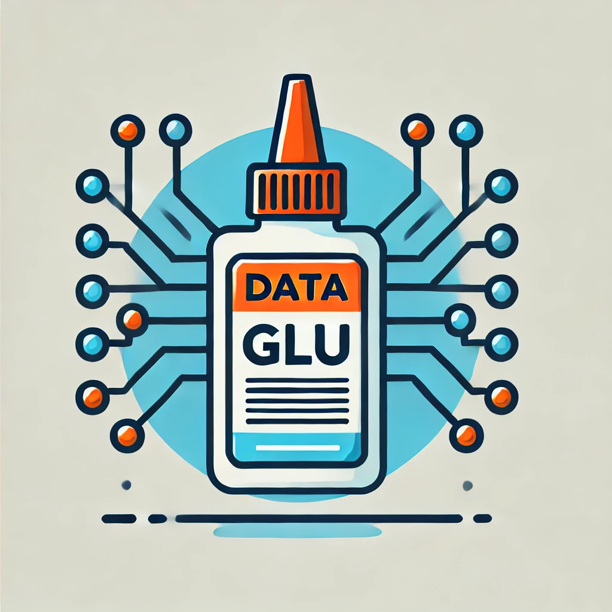

Project 1: Project Sentinel (Active)
Project Sentinel is a fully agent-orchestrated, agent-driven climate intelligence platform delivering early warnings for ecosystem stress and climate hazards—starting with the Great Lakes and scaling nationwide. An autonomous agent mesh handles end-to-end workflows: ingesting satellite/IoT/public data, running geospatial models, scoring risk, and triggering response playbooks—with humans looped in only for escalations. I’m leading architecture and delivery (agent mesh, streaming ingest, geospatial pipelines, APIs, and interactive maps) and lining up pilot partners for modules like harmful algal blooms, shoreline flooding, wildfire smoke, and extreme heat.
Project 1: LüFT Controls (Archived)
LüFT is an innovative air control valve designed to optimize energy efficiency by providing precise airflow measurement using thermal dispersion technology. Currently in the prototyping phase, LüFT was developed in collaboration with manufacturers to ensure accuracy and reliability for critical applications like lab controls, VAV systems, and room pressurization. This project holds special significance to me as I assist my dad, the project's inventor, in developing the technical aspects of the solution. Visit LüFT Controls.
Project 2: Swift Sign In (Archived)
This project aimed to streamline the process of using QR codes for seamless application sign-ins by developing a versatile client and server-side library that integrates with any authentication flow. Although I'm no longer actively working on it, this was an exciting full-stack prototyping experience that allowed me to dive deep into various authentication and authorization (AuthN/AuthZ) flows. Visit Swift Sign In.
Project 3: DataGLU (Archived)
Successfully created an AI agent capable of generating an ETL script. The agent could accept OpenAPI documents, user instructions and credentials and generate a cron job and an integration function to run locally.
